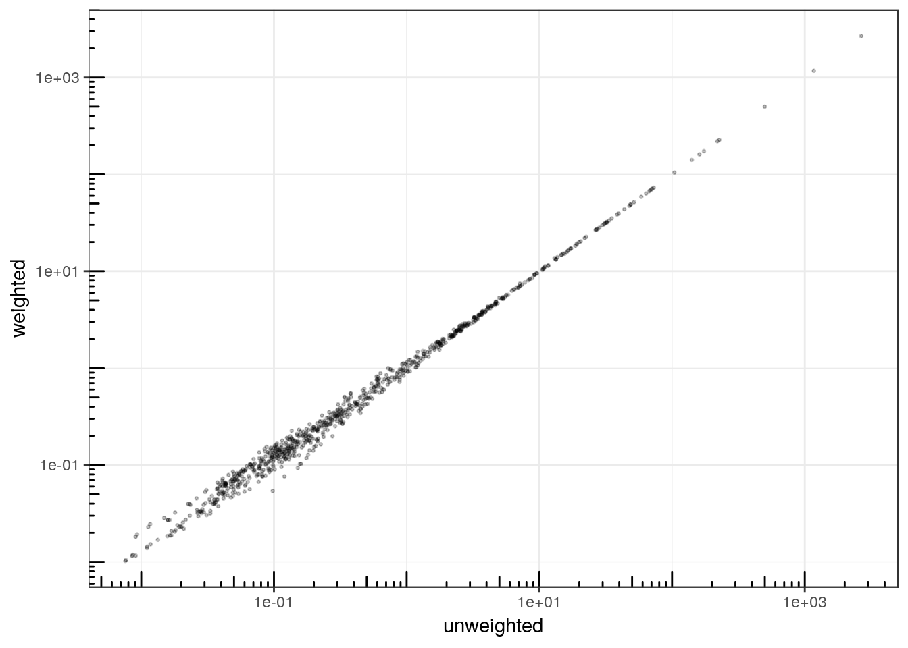

Analyzing multivariate count data with the Poisson log-normal model
PLN team
2018-12-19
Source:vignettes/PLN.Rmd
PLN.RmdPreliminaries
This vignette illustrates the use of the PLN function and the methods accompaning the R6 class PLNfit.
From the statistical point of view, the function PLN adjusts a multivariate Poisson lognormal model to a table of counts, possibly after correcting for effects of offsets and covariates. PLN is the building block for all the multivariate models found in the PLNmodels package: having a basic understanding of both the mathematical background and the associated set of R functions is a good place to start.
Requirements
The packages required for the analysis are PLNmodels plus some others for data manipulation and representation:
Data set
We illustrate our point with the trichoptera data set, a full description of which can be found in the corresponding vignette.
The trichoptera data frame stores a matrix of counts (trichoptera$Abundance), a matrix of offsets (trichoptera$TotalCounts) and some vectors of covariates (trichoptera$Wind, trichoptera$Temperature, etc.)
Mathematical background
The multivariate Poisson lognormal model (in short PLN, see Aitchison and Ho (1989)) relates some \(p\)-dimensional observation vectors \(\mathbf{Y}_i\) to some \(p\)-dimensional vectors of Gaussian latent variables \(\mathbf{Z}_i\) as follows
\[\begin{equation} \begin{array}{rcl} \text{latent space } & \mathbf{Z}_i \sim \mathcal{N}({\boldsymbol\mu},\boldsymbol\Sigma), \\ \text{observation space } & Y_{ij} | Z_{ij} \quad \text{indep.} & \mathbf{Y}_i | \mathbf{Z}_i\sim\mathcal{P}\left(\exp\{\mathbf{Z}_i\}\right). \end{array} \end{equation}\]
The parameter \({\boldsymbol\mu}\) corresponds to the main effects and the latent covariance matrix \(\boldsymbol\Sigma\) describes the underlying residual structure of dependence between the \(p\) variables.
Covariates and offsets
This model generalizes naturally to a formulation closer to a multivariate generalized linear model, where the main effect is due to a linear combination of \(d\) covariates \(\mathbf{x}_i\) (including a vector of intercepts). We also let the possibility to add some offsets for the \(p\) variables in in each sample, that is \(\mathbf{o}_i\). Hence, the previous model generalizes to
\[\begin{equation} \mathbf{Y}_i | \mathbf{Z}_i \sim \mathcal{P}\left(\exp\{\mathbf{Z}_i\}\right), \qquad \mathbf{Z}_i \sim \mathcal{N}({\mathbf{o}_i + \mathbf{x}_i^\top\boldsymbol\Theta},\boldsymbol\Sigma), \\ \end{equation}\] where \(\boldsymbol\Theta\) is a \(d\times p\) matrix of regression parameters. When all individuals \(i=1,\dots,n\) are stacked together, the data matrices available to feed the model are
- the \(n\times p\) matrix of counts \(\mathbf{Y}\)
- the \(n\times d\) matrix of design \(\mathbf{X}\)
- the \(n\times p\) matrix of offsets \(\mathbf{O}\)
Inference in PLN then focuses on the regression parameters \(\boldsymbol\Theta\) and on the covariance matrix \(\boldsymbol\Sigma\).
Optimization by Variational inference
Technically speaking, we adopt in PLNmodels a variational strategy to approximate the log-likelihood function and optimize the consecutive variational surrogate of the log-likelihood with a gradient-ascent-based approach. To this end, we rely on the CCSA algorithm of Svanberg (2002) implemented in the C++ library (Johnson 2011), which we link to the package.
Analysis of trichoptera data with a PLN model
The standard PLN model described above is adjusted with the function PLN. We now review its usage on a the trichoptera data set.
A PLN model with latent main effects
Adjusting a fit
In order to become familiar with the function PLN and its outputs, let us first fit a simple PLN model with just an intercept for each species:
##
## Initialization...
## Adjusting a PLN model with full covariance model
## Post-treatments...
## DONE!Note the use of the formula object to specify the model: the vector \(\boldsymbol\mu\) of main effects in the mathematical formulation (one per column species) is specified in the call with the term ~ 1 in the right-hand-side of the formula. Abundance is a variable in the data frame trichoptera correspondings to a matrix of 17 columns and the response in the model, occurring on the left-hand-side of the formula.
The PLNfit object
myPLN is an R6 object with class PLNfit, which comes with a couple of methods, as recalled when printing/showing such an object in the R console:
## A multivariate Poisson Lognormal fit with full covariance model.
## ==================================================================
## degrees_freedom loglik BIC ICL R_squared
## 170 -1129.446 -1460.251 -2306.298 0.989837
## ==================================================================
## * Useful fields
## $model_par, $latent, $var_par, $optim_par
## $loglik, $BIC, $ICL, $loglik_vec, $degrees_freedom, $criteria
## * Useful S3 methods
## print(), coef(), vcov(), fitted(), standard_error(), fisher()See also ?PLNfit for more comprehensive information.
Field access
Accessing public fields of a PLNfit object can be done just like with a traditional list, e.g.,
## [1] -1129.445821 -1460.250547 -2306.298428 0.989837## degrees_freedom loglik BIC ICL R_squared
## 1 170 -1129.446 -1460.251 -2306.298 0.989837GLM-like interface
We provide a set of S3-methods for PLNfit that mimic the standard (G)LM-like interface of R::stats, which we present now.
One can access the fitted value of the counts (Abundance – \(\hat{\mathbf{Y}}\)) and check that the algorithm basically learnt correctly from the data1:
data.frame(
fitted = as.vector(fitted(myPLN)),
observed = as.vector(trichoptera$Abundance)
) %>%
ggplot(aes(x = observed, y = fitted)) +
geom_point(size = .5, alpha =.25 ) +
scale_x_log10() +
scale_y_log10() +
theme_bw() + annotation_logticks()fitted value vs. observation
We can also reach the matrix of regression parameters \(\mathbf{\Theta}\) and the residual variance/covariance matrix \(\boldsymbol{\Sigma}\) of the latent variable with the traditional functions found in R for (G)LM manipulation: for the regression coefficents, we can use the coef (or coefficients) method. Approximated standard errors of the coefficients are also accessible via standard_error:
data.frame(
rbind(t(coef(myPLN)), t(standard_error(myPLN))),
row.names = c("effect", "stderr")
) %>% rmarkdown::paged_table()The residual covariance matrix better displays as an image matrix:

Observation weights
It is also possible to use observation weights like in standard (G)LMs:
myPLN_weighted <-
PLN(
Abundance ~ 1,
data = trichoptera,
weights = runif(nrow(trichoptera)),
control = list(trace = 0)
)
data.frame(
unweighted = as.vector(fitted(myPLN)),
weighted = as.vector(fitted(myPLN_weighted))
) %>%
ggplot(aes(x = unweighted, y = weighted)) +
geom_point(size = .5, alpha =.25 ) +
scale_x_log10() +
scale_y_log10() +
theme_bw() + annotation_logticks()
Accounting for covariates and offsets
For ecological count data, it is generally a good advice to include the sampling effort via an offset term whenever available, otherwise samples are not necessarily comparable:
myPLN_offsets <-
PLN(Abundance ~ 1 + offset(log(TotalCounts)),
data = trichoptera, control = list(trace = 0))Note that we use the function offset with a log-transform of the total counts since it acts in the latent layer of the model. Obviously the model with offsets is better since the log-likelihood is higher with the same number of parameters2:
| degrees_freedom | loglik | BIC | ICL | R_squared |
|---|---|---|---|---|
| 170 | -1129.446 | -1460.251 | -2306.298 | 0.9898370 |
| 170 | -1051.560 | -1382.365 | -2210.646 | 0.9220879 |
Let us try to correct for the wind effect in our model:
##
## Initialization...
## Adjusting a PLN model with full covariance model
## Post-treatments...
## DONE!When we compare the models, the gain is clear in terms of log-likelihood. However, the BIC choses not to include this variable:
| degrees_freedom | loglik | BIC | ICL | R_squared |
|---|---|---|---|---|
| 170 | -1051.560 | -1382.365 | -2210.646 | 0.9220879 |
| 187 | -1027.734 | -1391.619 | -2088.321 | 0.8903347 |
Covariance models (full, diagonal, spherical)
It is possible to change a bit the parametrization used for modelling the residual covariance matrix \(\boldsymbol\Sigma\), and thus reduce the total number of parameters used in the model. By default, the residual covariance is fully parameterized (hence \(p \times (p+1)/2\) parameters). However, we can chose to only model the variances of the species and not the covariances, by means of a diagonal matrix \(\boldsymbol\Sigma_D\) with only \(p\) parameters. In an extreme situation, we may also chose a single variance parameter for the whole matrix \(\boldsymbol\Sigma = \sigma \mathbf{I}_p\). This can be tuned in PLN with the control argument, a list controlling various aspects of the underlying optimization process:
myPLN_full <-
PLN(
Abundance ~ 1 + offset(log(TotalCounts)),
data = trichoptera, control = list(covariance = "full", trace = 0)
)
myPLN_diagonal <-
PLN(
Abundance ~ 1 + offset(log(TotalCounts)),
data = trichoptera, control = list(covariance = "diagonal", trace = 0)
)
myPLN_spherical <-
PLN(
Abundance ~ 1 + offset(log(TotalCounts)),
data = trichoptera, control = list(covariance = "spherical", trace = 0)
)It seems that the gain brought by passing from a diagonal matrix to a fully parameterized covariance is not worth having so many additional parameters:
rbind(
myPLN_full$criteria,
myPLN_diagonal$criteria,
myPLN_spherical$criteria
) %>%
as.data.frame(row.names = c("full", "diagonal", "spherical")) %>%
knitr::kable()| degrees_freedom | loglik | BIC | ICL | R_squared | |
|---|---|---|---|---|---|
| full | 170 | -1051.560 | -1382.365 | -2210.646 | 0.9220879 |
| diagonal | 34 | -1109.429 | -1175.590 | -2071.558 | 0.9169332 |
| spherical | 18 | -1792.270 | -1827.297 | -2691.099 | 0.8634665 |
A final model that we can try is the diagonal one with the wind as a covariate, which gives a slight improvement.
myPLN_final <-
PLN(
Abundance ~ 1 + Wind + offset(log(TotalCounts)),
data = trichoptera, control = list(covariance = "diagonal", trace = 0)
)
rbind(
myPLN_wind$criteria,
myPLN_diagonal$criteria,
myPLN_final$criteria
) %>% knitr::kable()| degrees_freedom | loglik | BIC | ICL | R_squared |
|---|---|---|---|---|
| 187 | -1027.734 | -1391.619 | -2088.321 | 0.8903347 |
| 34 | -1109.429 | -1175.590 | -2071.558 | 0.9169332 |
| 51 | -1072.797 | -1172.038 | -1746.809 | 0.8755023 |
References
Aitchison, J., and C.H. Ho. 1989. “The Multivariate Poisson-Log Normal Distribution.” Biometrika 76 (4). Oxford University Press: 643–53.
Johnson, Steven G. 2011. The Nlopt Nonlinear-Optimization Package. http://ab-initio.mit.edu/nlopt.
Svanberg, Krister. 2002. “A Class of Globally Convergent Optimization Methods Based on Conservative Convex Separable Approximations.” SIAM Journal on Optimization 12 (2). SIAM: 555–73.